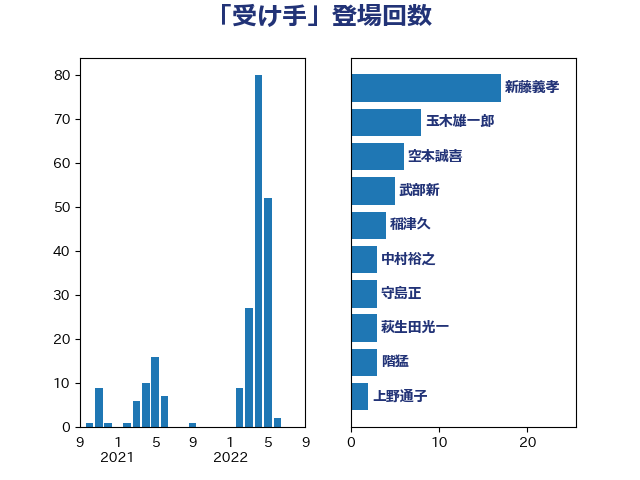

単語「受け手」

| 新藤義孝 | 自由民主党 | 17 回 |
| 玉木雄一郎 | 国民民主党 | 8 回 |
| 空本誠喜 | 日本維新の会 | 6 回 |
| 武部新 | 自由民主党 | 5 回 |
| 稲津久 | 公明党 | 4 回 |
| 中村裕之 | 自由民主党 | 3 回 |
| 守島正 | 日本維新の会 | 3 回 |
| 萩生田光一 | 自由民主党 | 3 回 |
| 階猛 | 立憲民主党 | 3 回 |
| 上野通子 | 自由民主党 | 2 回 |
| 北側一雄 | 公明党 | 2 回 |
| 小山展弘 | 立憲民主党 | 2 回 |
| 小沢雅仁 | 立憲民主党 | 2 回 |
| 横沢高徳 | 立憲民主党 | 2 回 |
| 田名部匡代 | 立憲民主党 | 2 回 |
| 田村貴昭 | 日本共産党 | 2 回 |
| 舟山康江 | 国民民主党 | 2 回 |
| 西田実仁 | 公明党 | 2 回 |
| 赤木正幸 | 日本維新の会 | 2 回 |
| 上川陽子 | 自由民主党 | 1 回 |
| 下野六太 | 公明党 | 1 回 |
| 中谷元 | 自由民主党 | 1 回 |
| 伊藤孝江 | 公明党 | 1 回 |
| 佐藤啓 | 自由民主党 | 1 回 |
| 加藤勝信 | 自由民主党 | 1 回 |
| 吉田忠智 | 立憲民主党 | 1 回 |
| 吉田統彦 | 立憲民主党 | 1 回 |
| 大口善徳 | 公明党 | 1 回 |
| 安達澄 | 無所属 | 1 回 |
| 宮下一郎 | 自由民主党 | 1 回 |
| 山口壯 | 自由民主党 | 1 回 |
| 山口那津男 | 公明党 | 1 回 |
| 岸真紀子 | 立憲民主党 | 1 回 |
| 平井卓也 | 自由民主党 | 1 回 |
| 平木大作 | 公明党 | 1 回 |
| 柴山昌彦 | 自由民主党 | 1 回 |
| 根本幸典 | 自由民主党 | 1 回 |
| 梶山弘志 | 自由民主党 | 1 回 |
| 渡辺創 | 立憲民主党 | 1 回 |
| 湯原俊二 | 立憲民主党 | 1 回 |
| 石井章 | 日本維新の会 | 1 回 |
| 磯崎仁彦 | 自由民主党 | 1 回 |
| 神谷裕 | 立憲民主党 | 1 回 |
| 簗和生 | 自由民主党 | 1 回 |
| 緑川貴士 | 立憲民主党 | 1 回 |
| 舞立昇治 | 自由民主党 | 1 回 |
| 船田元 | 自由民主党 | 1 回 |
| 赤澤亮正 | 自由民主党 | 1 回 |
| 赤羽一嘉 | 公明党 | 1 回 |
| 長友慎治 | 国民民主党 | 1 回 |
| 長妻昭 | 立憲民主党 | 1 回 |
| 高橋克法 | 自由民主党 | 1 回 |
| 高階恵美子 | 自由民主党 | 1 回 |